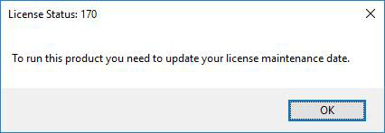

FAQ-1122 Ich erhalte die Fehlermeldung "Um dieses Produkt auszuführen, müssen Sie das Datum Ihrer Lizenzsoftwarepflege aktualisieren." Was soll ich tun?
Update-Maint-Date-to-Run-This-Product
Letztes Update: 17.03.2023
Falls Sie die folgende Fehlermeldung sehen, wenn Sie Origin starten:
License Status: 170
To run this product you need to update your license maintenance date (Um dieses Produkt auszuführen, müssen Sie das Datum der Softwarepflege Ihrer Lizenz aktualisieren.)
- 
Bitte wenden Sie sich an den Administrator Ihres Origin-Lizenzservers, um zu prüfen, ob die auf der Client-Maschine installierte Origin-Version von Ihrem Softwarepflegeplan unterstützt wird.
- Falls ja, prüfen Sie bitte, ob die Lizenzdatei auf dem Server nach Verlängerung der Softwarepflege aktualisiert wurde.
- Falls nein, befolgen Sie bitte die Anweisungen auf dieser Seite, um die Lizenzdatei mit dem neuen Datum der Softwarepflege zu aktualisieren.
- Falls die Lizenzdatei bereits aktualisiert wurde, klicken Sie bitte auf die Schaltfläche Reread License File (Lizenzdatei erneut lesen) auf der Registerkarte Start/Stop/Reread der LMTools.
- Falls nicht, deinstallieren Sie bitte die aktuelle Origin-Version und installieren Sie stattdessen die unterstützte Version.
- Befolgen Sie bitte die Anweisungen auf dieser Seite, um die Lizenz mit dem neuen Datum der Softwarepflege zu aktualisieren.
- Oder wählen Sie in der Origin-Software Hilfe: Lizenz aktivieren und klicken Sie auf 'Aktivieren'. Dadurch wird Ihre Lizenz auf das neue Softwarepflegedatum aktualisiert.
Schlüsselwörter:Lizenzstatus: 170, keine Verbindung zum Server, 3 Minuten, Lizenz abgelaufen, Netzwerk, FlexLM-Server, freie Lizenz, Ausbuchen nicht möglich, aktualisieren, Softwarepflege verlängern